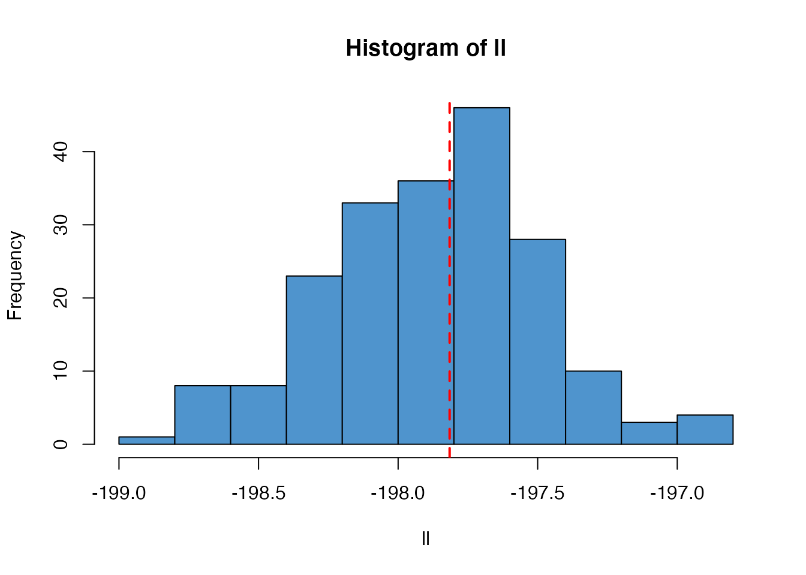
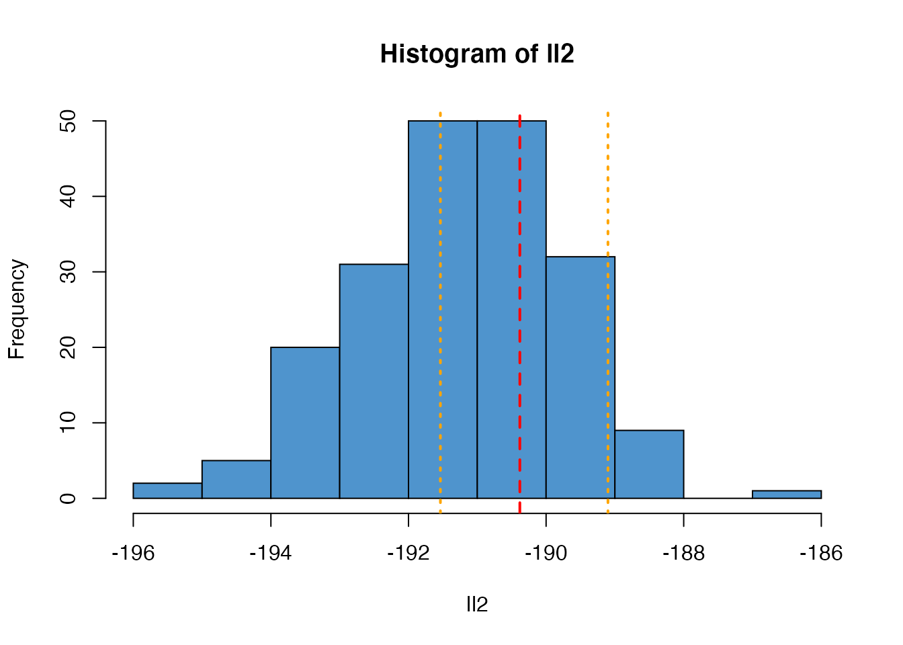
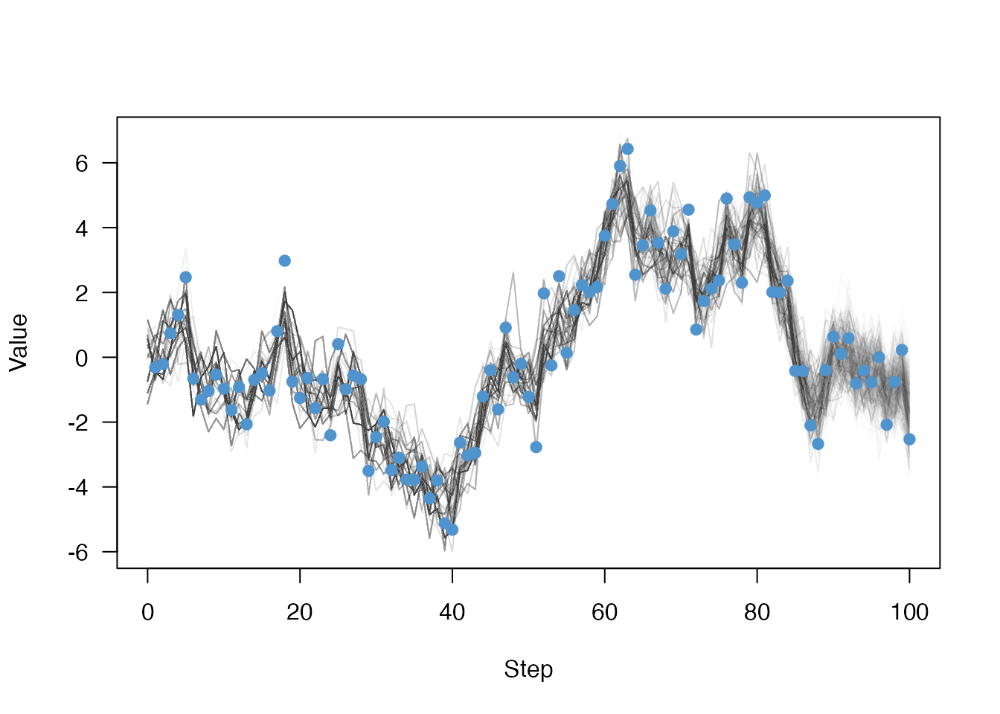

We can test that the SMC algorithm implemented in mcstate::particle_filter() gives an unbiased estimate of the likelihood by comparing a simple model where the likelihood can be calculated exactly. The volatility model included in the dust package fulfils this criteria:
class volatility {
public:
using real_type = double;
using internal_type = dust::no_internal;
using rng_state_type = dust::random::generator<real_type>;
struct data_type {
real_type observed;
};
struct shared_type {
real_type alpha;
real_type sigma;
real_type gamma;
real_type tau;
real_type x0;
};
volatility(const dust::pars_type<volatility>& pars) : shared(pars.shared) {
}
size_t size() {
return 1;
}
std::vector<real_type> initial(size_t step) {
std::vector<real_type> state(1);
state[0] = shared->x0;
return state;
}
void update(size_t step, const real_type * state,
rng_state_type& rng_state, real_type * state_next) {
const real_type x = state[0];
state_next[0] = shared->alpha * x +
shared->sigma * dust::random::normal<real_type>(rng_state, 0, 1);
}
real_type compare_data(const real_type * state, const data_type& data,
rng_state_type& rng_state) {
return dust::density::normal(data.observed, shared->gamma * state[0],
shared->tau, true);
}
private:
dust::shared_ptr<volatility> shared;
};
// Helper function for accepting values with defaults
inline double with_default(double default_value, cpp11::sexp value) {
return value == R_NilValue ? default_value : cpp11::as_cpp<double>(value);
}
namespace dust {
template <>
dust::pars_type<volatility> dust_pars<volatility>(cpp11::list pars) {
using real_type = volatility::real_type;
real_type x0 = 0;
real_type alpha = with_default(0.91, pars["alpha"]);
real_type sigma = with_default(1, pars["sigma"]);
real_type gamma = with_default(1, pars["gamma"]);
real_type tau = with_default(1, pars["tau"]);
volatility::shared_type shared{alpha, sigma, gamma, tau, x0};
return dust::pars_type<volatility>(shared);
}
template <>
volatility::data_type dust_data<volatility>(cpp11::list data) {
return volatility::data_type{cpp11::as_cpp<double>(data["observed"])};
}
}This is a dust model; refer to the documentation there for details. This file can be compiled with dust::dust, but here we use the version bundled with dust
volatility <- dust::dust_example("volatility")We can simulate some data from the model:
head(data)
#> step value
#> 1 1 -0.3167855
#> 2 2 1.6327246
#> 3 3 1.7546653
#> 4 4 -0.8107194
#> 5 5 0.5618021
#> 6 6 0.7848421
plot(value ~ step, data, type = "o", pch = 19, las = 1)In order to estimate the parameters of the process that might have generated this dataset, we need, in addition to our model, an observation/comparison function. In this case, given that we observe some state:
volatility_compare <- function(state, observed, pars) {
dnorm(observed$value, pars$gamma * drop(state), pars$tau, log = TRUE)
}We also model the initialisation process:
volatility_initial <- function(info, n_particles, pars) {
matrix(rnorm(n_particles, 0, pars$sd), 1)
}
pars <- list(
# Generation process
alpha = 0.91,
sigma = 1,
# Observation process
gamma = 1,
tau = 1,
# Initial condition
sd = 1)and preprocess the data into the correct format:
volatility_data <- mcstate::particle_filter_data(data, "step", 1)
head(volatility_data)
#> step_start step_end step_start step_end value
#> 1 0 1 0 1 -0.3167855
#> 2 1 2 1 2 1.6327246
#> 3 2 3 2 3 1.7546653
#> 4 3 4 3 4 -0.8107194
#> 5 4 5 4 5 0.5618021
#> 6 5 6 5 6 0.7848421With all these pieces we can create our particle filter object, specifying that we will use \(10^3\) particles
filter <- mcstate::particle_filter$new(volatility_data, volatility, 1000,
compare = volatility_compare,
initial = volatility_initial)
filter
#> <particle_filter>
#> Public:
#> history: function (index_particle = NULL)
#> initialize: function (data, model, n_particles, compare, index = NULL, initial = NULL,
#> inputs: function ()
#> model: dust_generator, R6ClassGenerator
#> n_particles: 1000
#> nested: FALSE
#> restart_state: function (index_particle = NULL)
#> run: function (pars = list(), save_history = FALSE, save_restart = NULL,
#> run_begin: function (pars = list(), save_history = FALSE, save_restart = NULL,
#> set_n_threads: function (n_threads)
#> state: function (index_state = NULL)
#> Private:
#> compare: function (state, observed, pars)
#> constant_log_likelihood: NULL
#> data: particle_filter_data_single, particle_filter_data, data.frame
#> data_split: list
#> gpu_config: NULL
#> index: NULL
#> initial: function (info, n_particles, pars)
#> last_history: NULL
#> last_model: NULL
#> last_restart_state: NULL
#> last_state: NULL
#> n_threads: 1
#> seed: NULL
#> steps: 0 1 2 3 4 5 6 7 8 9 10 11 12 13 14 15 16 17 18 19 20 21 ...Running the particle filter simulates the process on all \(10^3\) particles and compares at each timestep the simulated data with your observed data using the provided comparison function. It returns the log-likelihood:
filter$run(pars)
#> [1] -185.4638This is stochastic and each time you run it, the estimate will differ:
filter$run(pars)
#> [1] -185.4257In this case the model is simple enough that we can use a Kalman Filter to calculate the likelihood exactly:
kalman_filter <- function(alpha, sigma, gamma, tau, data) {
y <- data$value
mu <- 0
s <- 1
log_likelihood <- 0
for (t in seq_along(y)) {
mu <- alpha * mu
s <- alpha^2 * s + sigma^2
m <- gamma * mu
S <- gamma^2 * s + tau^2
K <- gamma * s / S
mu <- mu + K * (y[t] - m)
s <- s - gamma * K * s
log_likelihood <- log_likelihood + dnorm(y[t], m, sqrt(S), log = TRUE)
}
log_likelihood
}
ll_k <- kalman_filter(pars$alpha, pars$sigma, pars$gamma, pars$tau,
volatility_data)
ll_k
#> [1] -185.3122Unlike the particle filter the Kalman filter is deterministic:
kalman_filter(pars$alpha, pars$sigma, pars$gamma, pars$tau, volatility_data)
#> [1] -185.3122However, the particle filter, run multiple times, will create a distribution centred on this likelihood:
ll <- replicate(200, filter$run(pars))
hist(ll, col = "steelblue3")
abline(v = ll_k, col = "red", lty = 2, lwd = 2)
As the number of particles used changes, the variance of this estimate will change
filter2 <- mcstate::particle_filter$new(volatility_data, volatility, 100,
compare = volatility_compare,
initial = volatility_initial)
ll2 <- replicate(200, filter2$run(pars))
hist(ll2, col = "steelblue3")
abline(v = ll_k, col = "red", lty = 2, lwd = 2)
abline(v = range(ll), col = "orange", lty = 3, lwd = 2)
If you run a particle filter with save_history = TRUE, it will record the (filtered) trajectories:s
filter$run(pars, save_history = TRUE)
#> [1] -185.4833
dim(filter$history())
#> [1] 1 1000 101This is a N state (here 1) x N particles (1000) x N time steps (100) 3d array, but we will drop the first rank of this for plotting
matplot(0:100, t(drop(filter$history())), xlab = "Step", ylab = "Value",
las = 1, type = "l", lty = 1, col = "#00000002")
points(value ~ step, data, col = "steelblue3", pch = 19)